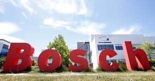
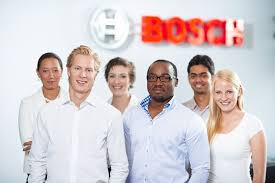

ABOUT BOSCH

Robert Bosch GmbH (/bɒʃ/; German: [bɔʃ] (About this soundlisten)), or Bosch, is a German multinational engineering and technology company headquartered in Gerlingen, near Stuttgart, Germany. The company was founded by Robert Bosch in
Stuttgart in 1886.[2] Bosch is 92% owned by Robert Bosch Stiftung, a charitable institution.[1]
History:
China has developed into an important market and manufacturing base for Bosch. In 2012, Bosch had 34,000 employees and a revenue of 41.7 billion Yuan (about 5 billion Euro) in China.
- 2012 – Purchased SPX Service Solutions[7][8]
- 2012 – Bosch sold its foundation brakes activities to KPS Capital Partners, that led to the establishment of Chassis Brakes International[9]
- 2013 – Bosch announced it would exit its solar business
- 2014 – Bosch entered talks to acquire Red Bend Software.[10]
- 2014 – Bosch takes over 100% of the shares from the former BSH Bosch and Siemens Hausgeräte GmbH joint venture (home appliances)[11]
- 2014 – Bosch received the 2014 U.S. Smart Partner award for Physical Security from Ingram Micro Inc.[12]
- 2015 – Bosch takes over 100% of the shares of the former ZF Lenksysteme (Steering Systems) GmbH joint venture (was 50/50 with ZF Friedrichshafen)
- 2015 – Bosch purchases Seeo, Inc, a start-up working on solid state lithium ion batteries.